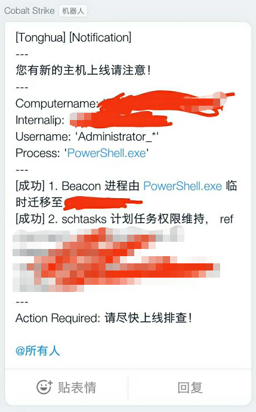
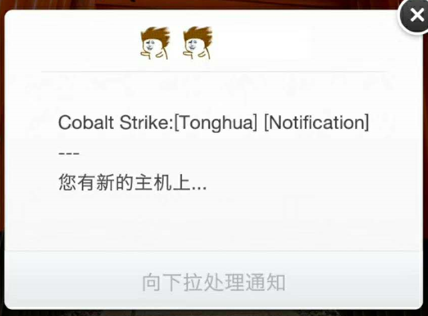

CobaltStrike Aggressor Script 实现 Beacon 上线告警功能
0x00 前言
把之前写的一个笔记翻出来，思路比较简单，所以也就不额外的添加内容直接发出来了。
最近在研究CobaltStrike，有一个使用场景是说，当我把钓鱼邮件发出去了，等着Beacon上线的这段时间是无感知的，也就是说什么时候上线不知道、上没上线也不知道。传统的解决方案是说抽空上来瞅一眼，长远来讲这种方法是低效且不可靠的（emm，看日志可以知道shell来过又掉了hhh）。
而我个人做事的态度是比较推崇流程化、工具化、自动化和文档化的，所以便想着可以配合一些IM实现Beacon上线以及System Profiler触发的实时告警，方便RedTeamer及时响应做后续的操作。
0x01 告警项
- Beacon
- System Profiler
- Clone Site
- etc…
0x02 需要适配的IM
- 钉钉
- 微信
- 企业微信
- Slack
- Telegram
- Chime
- 自定义函数（方便后续其他IM适配）
0x03 实现思路
代码量不多，整体的思路是，当事件触发时调用 HTTP POST/GET 请求，callback对应的IM应用接收消息，工作量主要集中在各类 IM webhook 的接口申请上，或者未开放接口的，要找一些第三方的开源解决方案，效果图如下：


参考文档：https://www.cobaltstrike.com/aggressor-script/events.html ，获取 Cobalt Strike 的 event list。
结合 Headless Cobalt Strike 可以应用到将 cna 脚本的功能同步至连接同一 teamserver 的全部 Cobalt Strike Client，参考：https://www.cobaltstrike.com/aggressor-script/index.html
这么做有一个好处，避免 Cobalt Strike Client 所处的网络不稳导致无法实时感知 Beacon 上线行为，协同作战的时候也比较方便。
代码放在 Github 上了：https://github.com/omg2hei/CobaltStrikeAggressor/blob/master/CSNotification.cna
0x04 后记
Aggressor 脚本写起来并不难，主要还是安全思路的价值大于软件工程，最近在整理一些基础功能的cna代码，以期当有更好的安全思路时可以快速构建PoC，验证思路的价值。
0x05 参考链接
- [1] 利用钉钉机器人发送告警信息, https://www.jianshu.com/p/52b5861ded59
- [2] Slack Notifications for Cobalt Strike, https://threatexpress.com/blogs/2016/slack-notifications-for-cobalt-strike/#slack-notifications-for-cobalt-strike
- [3] https://github.com/dcsync/pycobalt/blob/master/docs/aggressor.md
- [4] 自动化工具 钉钉机器人消息 Python 封装 (开源), https://testerhome.com/topics/11758
- [5] Cobalt Strike神器高级教程利用Aggressor脚本编写目标上线邮件提醒, https://blog.csdn.net/qq_27446553/article/details/79380021
- [6] aggressor_scripts/http.cna, https://github.com/001SPARTaN/aggressor_scripts/blob/master/http.cna